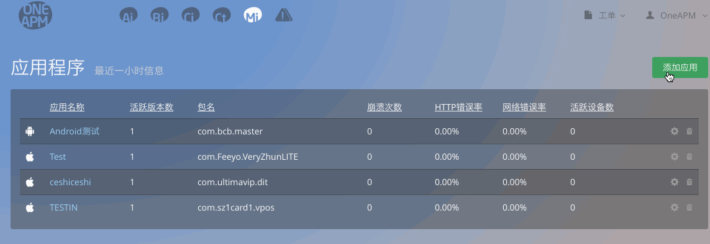
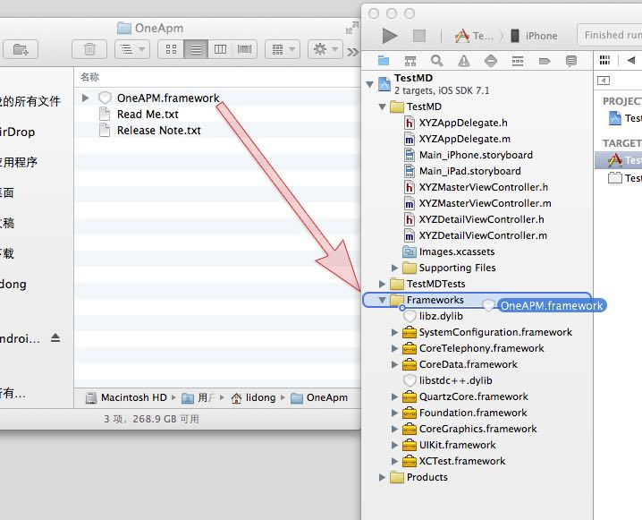
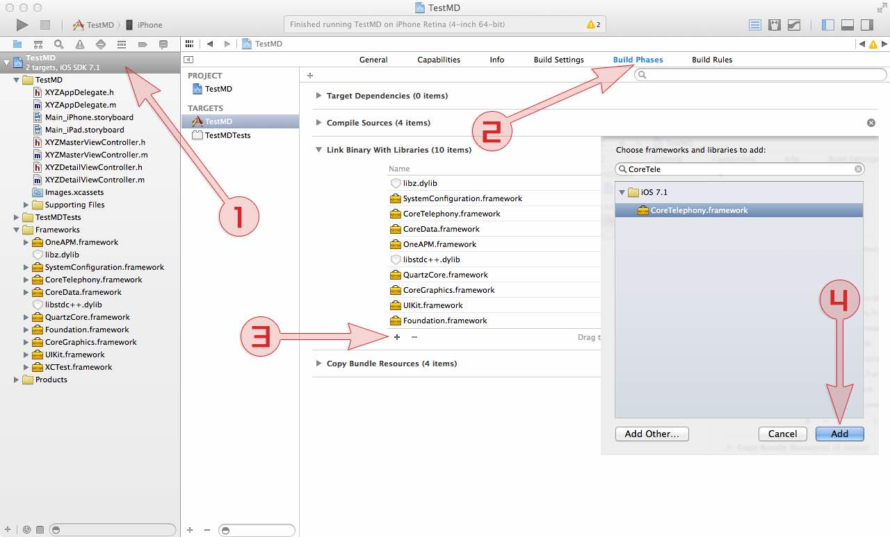

OneAPM_iOS_SDK Objective-C 安装文档
1. 注册 OneAPM
注册 OneAPM，登录账号后点击"Mobile Insight （移动应用性能管理）"，点击 添加新应用 进入下载安装页面。
 为您的应用取名
您也可以根据本文的安装步骤进行安装。
2.配置.framework形式开发包
2.1 自动配置.framework形式开发包（使用CocoaPods）
(1)在Podfile文件添加：
pod 'OneAPM','~> 2.2.4.0'
(2)在Podfile所在的文件夹下输入命令：
Pod install
(3)安装好后就可以打开xcworkspace文件，在你的项目中使用OneAPM_iOS_SDK了
open App.xcworkspace
2.2 手动配置.framework形式开发包
(1)下载并解压 OneAPM iOS SDK
下载最新版本的 iOS SDK:在安装步骤页选择应用类别，在“命名你的应用程序”输入项目名称，点击提交，记下随后出现的 Token。
(2) 添加 OneAPM Framework 至 Xcode 项目中
解压 SDK，并将「OneAPM.framework」文件夹从 Finder 中拖拽至 Xcode 项目中（悬停至导航窗口的项目中）。
出现提示窗口时，选择「Copy items into destination...」和「Create folder references...」。

(3) 在 Linker Settings 中添加以下 5 个 Libraries
在项目导航窗口内点击你的 Project，并选中你的 App，然后选择「Build Phases」选项卡。
打开「Link Binary with Libraries」列表。
点击添加:
SystemConfiguration.frameworkCoreTelephony.frameworkCoreData.frameworklibz.tbd\libz.dylib (Xcode6及以前版本）libstdc++.tbd\libstdc++.dylib (Xcode6及以前版本）

3.引入SDK
在项目文件 [app_name]-Prefix.pch（通常在文件夹「Support Files」中）中，引入 OneAPM 头文件：
import <OneAPM/OneAPM.h>
在文件 main.m 中添加如下代码，
int main(int argc, char * argv[]) {
@autoreleasepool {
[OneAPM startWithApplicationToken: @ ""];
return UIApplicationMain(argc, argv, nil, NSStringFromClass([AppDelegate class]));
}
}
4. 运行应用程序并使用
Clean Project，并重新在模拟器或设备中启动应用程序，开始应用性能管理。
(注：开发时若要使用“崩溃统计”功能，请选Release模式在真机上运行并断开与Xcode连接)
请静候 1分钟，等待应用程序向 OneAPM 发送应用程序性能数据，即可开始使用 OneAPM 应用性能管理功能。
5. 符号化表（dSYM文件）上传
当应用列表可以显示出应用“包名”等信息后：
a.点击“崩溃”进入崩溃信息展示界面;
b.点击崩溃信息界面右上角“上传dSYM文件”按钮，选择APP版本号，选择要上传的dSYM文件"选取"，“保存”。
若应用程序无数据展现，或安装过程中有任何问题:
您可以采取以下方式与我们取得联系：
工单系统：提交工单
技术支持热线：400-622-3101
OneAPM 客服邮箱：support@oneapm.com
OneAPM MI技术交流3群：471152223